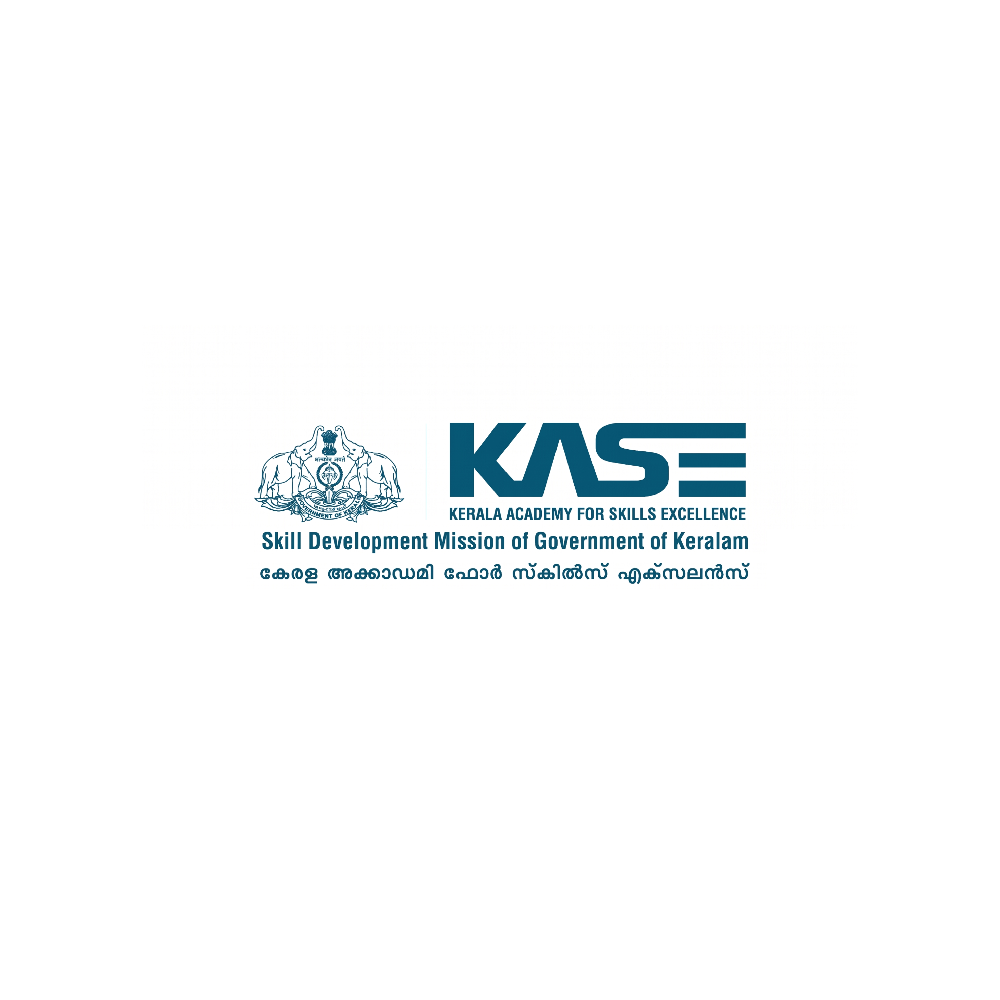

DB AG & Supplier Network: Delegation Visit & Recruitment Dashboard
DB AG & Supplier Network: Delegation Visit & Recruitment Dashboard
From July 22nd to July 24th, 2026, a high-level 14-member delegation from Germany, comprising senior representatives from Deutsche Bahn (DB AG) and its specialized supplier network (BUG SE, Spitzke, SPL Powerlines, STRABAG), undertook an official visit to Kerala.
Out of the 20 students mobilized, 18 successfully attended the pre-screening 'Speed Dating' session at the Goethe Zentrum. Below is the roster of the 18 participating candidates:
| Sl No. | Code | Name | Qualification | Exp. (Years) | Rating / Status |
|---|---|---|---|---|---|
| 1 | KH 01 | Albin Saju | Diploma in Electronics | 2+ Years | 🟢 Move directly to next stage |
| 2 | KH 08 | Simranjit Singh | Cert in Electrical Engg. | 5+ Years | 🟢 Move directly to next stage |
| 3 | KH 09 | Sruthi Sagar Sangeeth | Diploma in Mechatronics | 1.5 Years | 🟢 Move directly to next stage |
| 4 | KH 14 | Joshwa K.S | ITI Electrical Systems | Trainee / <1 Year | 🟢 Move directly to next stage |
| 5 | KH 15 | Joyal PA | ITI | 1+ Years | 🟢 Move directly to next stage |
| 6 | KH 02 | Hameed Roshan PN | Engineering Diploma | 2.5 Years | 🟡 Reserve / Potentially Interesting |
| 7 | KH 04 | Nimish Thomas | Diploma in Electronics Engg. | 7+ Years | 🟡 Reserve |
| 8 | KH 05 | Sandip Phapale | B.Tech / Diploma | 13+ Years | 🟡 Reserve |
| 9 | KH 13 | Gokul Krishna PK | ITI Electrician / NAC | 4+ Years | 🟡 Reserve |
| 10 | KH 17 | Salman Faris Noordeen | ITI Electrician | 4 Years | 🟡 Reserve |
| 11 | KH 18 | Sanil P M | ITI Electrical Engg. | 4 Years | 🟡 Reserve |
| 12 | KH 20 | Yadhulkrishna T M | Pursuing ITI / BA History | 4 Years | 🟡 Reserve |
| Sl No. | Code | Name | Qualification | Exp. (Years) | Rating |
|---|---|---|---|---|---|
| 1 | KH 04 | Nimish Thomas | Diploma in Electronics Engg. | 7+ Years | 🟢 Very Good |
| 2 | KH 07 | Shanil Kumar K S | B.Tech / Diploma Mech. | 2 Years | 🟢 Very Good |
| 3 | KH 08 | Simranjit Singh | Cert in Electrical Engg. | 5+ Years | 🟢 Very Good |
| 4 | KH 02 | Hameed Roshan PN | Engineering Diploma | 2.5 Years | 🟡 Good |
| 5 | KH 09 | Sruthi Sagar Sangeeth | Diploma in Mechatronics | 1.5 Years | 🟡 Good |
| 6 | KH 10 | Abel CJ | ITI Wireman | Trainee / <1 Year | 🟡 Good |
| 7 | KH 15 | Joyal PA | ITI | 1+ Years | 🟡 Good |
| 8 | KH 17 | Salman Faris Noordeen | ITI Electrician | 4 Years | 🟡 Good |
| 9 | KH 18 | Sanil P M | ITI Electrical Engg. | 4 Years | 🟡 Good |
| 10 | KH 19 | Sooraj K.R | ITI | 1 Year | 🟡 Good |
| 11 | KH 20 | Yadhulkrishna T M | Pursuing ITI / BA History | 4 Years | 🟡 Good |
| Sl No. | Code | Name | Qualification | Exp. (Years) | Rating |
|---|---|---|---|---|---|
| 1 | KH 01 | Albin Saju | Diploma in Electronics | 2+ Years | 🟢 Very Good |
| 2 | KH 08 | Simranjit Singh | Cert in Electrical Engg. | 5+ Years | 🟢 Very Good |
| 3 | KH 09 | Sruthi Sagar Sangeeth | Diploma in Mechatronics | 1.5 Years | 🟢 Very Good |
| 4 | KH 02 | Hameed Roshan PN | Engineering Diploma | 2.5 Years | 🟡 Good |
| 5 | KH 05 | Sandip Phapale | B.Tech / Diploma | 13+ Years | 🟡 Good |
| 6 | KH 06 | Santosh Jadhav | Diploma / ITI | 6+ Years | 🟡 Good |
| 7 | KH 13 | Gokul Krishna PK | ITI Electrician / NAC | 4+ Years | 🟡 Good |
| 8 | KH 18 | Sanil P M | ITI Electrical Engg. | 4 Years | 🟡 Good |
| Sl No. | Code | Name | Qualification | Exp. (Years) | Rating |
|---|---|---|---|---|---|
| 1 | KH 01 | Albin Saju | Diploma in Electronics | 2+ Years | 🟢 Very Good |
| 2 | KH 05 | Sandip Phapale | B.Tech / Diploma | 13+ Years | 🟡 Good |
| 3 | KH 06 | Santosh Jadhav | Diploma / ITI | 6+ Years | 🟡 Good |
| 4 | KH 08 | Simranjit Singh | Cert in Electrical Engg. | 5+ Years | 🟡 Good |
| 5 | KH 09 | Sruthi Sagar Sangeeth | Diploma in Mechatronics | 1.5 Years | 🟡 Good |
| 6 | KH 13 | Gokul Krishna PK | ITI Electrician / NAC | 4+ Years | 🟡 Good |
| 7 | KH 15 | Joyal PA | ITI | 1+ Years | 🟡 Good |
| 8 | KH 18 | Sanil P M | ITI Electrical Engg. | 4 Years | 🟡 Good |
| 9 | KH 20 | Yadhulkrishna T M | Pursuing ITI / BA History | 4 Years | 🟡 Good |
| Sl No. | Code | Name | Qualification | Exp. (Years) | Rating |
|---|---|---|---|---|---|
| 1 | KH 04 | Nimish Thomas | Diploma in Electronics Engg. | 7+ Years | 🟢 Very Good |
| 2 | KH 08 | Simranjit Singh | Cert in Electrical Engg. | 5+ Years | 🟢 Very Good |
| 3 | KH 02 | Hameed Roshan PN | Engineering Diploma | 2.5 Years | 🟡 Good |
| 4 | KH 05 | Sandip Phapale | B.Tech / Diploma | 13+ Years | 🟡 Good |
| 5 | KH 06 | Santosh Jadhav | Diploma / ITI | 6+ Years | 🟡 Good |
| 6 | KH 09 | Sruthi Sagar Sangeeth | Diploma in Mechatronics | 1.5 Years | 🟡 Good |